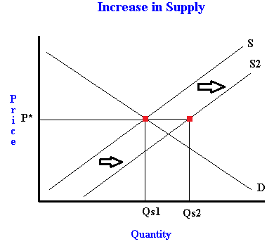
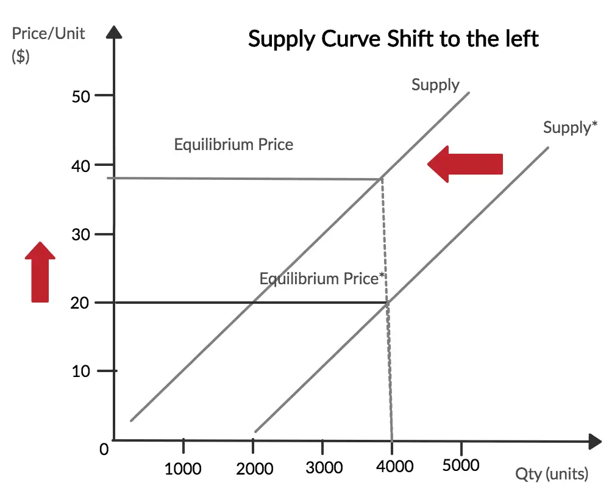

AP-SUPPLY
Supply → negosyante
Demand → mamimili
Supply / Panustos – dami ng produkto o serbisyo na gustong ibenta ng mga prodyuser sa isang takdang presyo at partikular na panahon.
Ang presyo ang pangunahing nagtatakda sa dami ng supply.
Batas ng Supply (Ceteris Paribus)
(“Presyo lamang ang nakaaapekto”)
📈 Kapag tumataas ang presyo → tumataas ang supply
📉 Kapag bumababa ang presyo → bumababa ang supply
P = presyo
Qs = quantity supplied
↑ Presyo = ↑ Supply
↓ Presyo = ↓ Supply
Mathematical Function
Supply = Pagmamahal + Kakayahan
Supply Schedule
Supply Function
Qs = C + bP
where:
Qs = Quantity Supplied
C = Dami ng supply kapag ang presyo ay 0 (intercept)
b = Slope
P = Presyo
Supply Curve
- Grapikong pamamaraan sa pagpakita ng supply
Tumataas and supply:

Bumababa ang supply:
